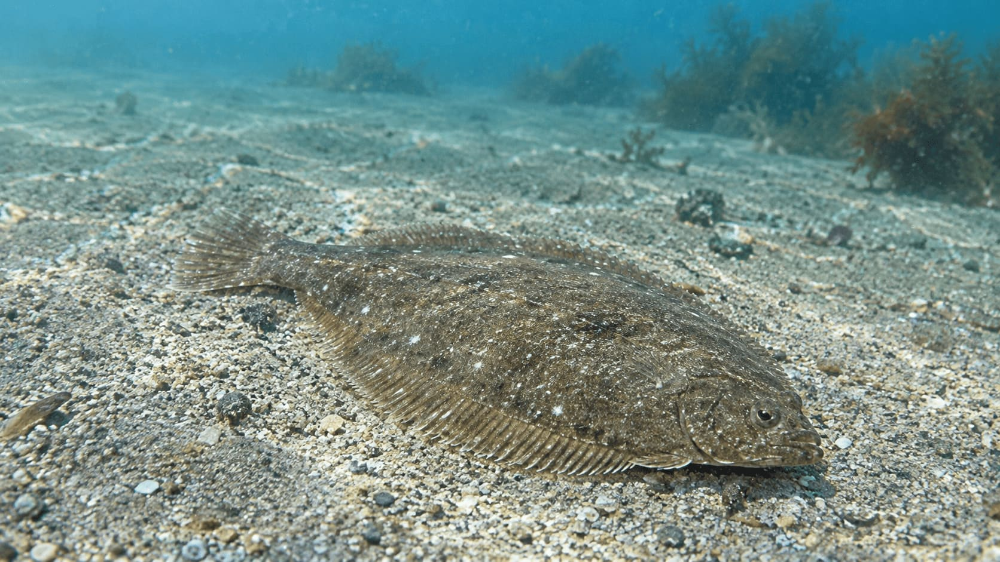
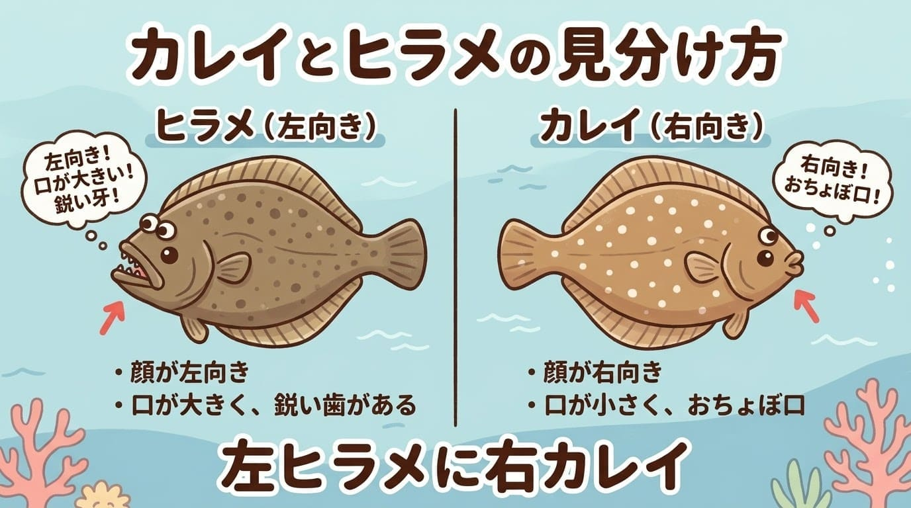

【完全攻略】海底の「座布団」を狙い撃ち！カレイの生態から投げ釣り・船釣り攻略法

冬の防波堤にストーブを持ち込み、アタリをじっと待つ――そんな風物詩としておなじみのカレイ釣り。マコガレイやイシガレイをはじめ、日本沿岸では非常に多くのカレイが釣りのターゲットになっています。釣り人の間では、50cmを超えるような特大サイズに敬意を込めて「座布団」と呼びます。ヒットした瞬間に海底に張り付くような重量感は、一度味わうと病みつきになる強烈な魅力を持っています。
1. カレイってどんな魚？知られざる生態の秘密
カレイの最大の特徴といえば、あの平べったい体。しかし彼らは、生まれた瞬間から平たいわけではありません。稚魚の時は普通の魚と同じように縦向きで泳いでいますが、成長とともに片側の眼が移動し、海底に身を横たえる「底生魚」としての姿へと変態を遂げます。
海底では砂泥の中に身を隠し、目玉だけをキョロキョロと出しながら、ゴカイなどのエサが近づくのを待ち構えています。

どちらも平たい体ですが、「左ヒラメに右カレイ」という言葉があるように、お腹を手前にして置いたとき、顔が左を向くのがヒラメ、右を向くのがカレイと一般的に見分けることができます（※一部例外もあります）。
2. 「カレイ＝冬」と言われる本当の理由
一般的にカレイ釣りは秋から春にかけてがシーズンとされていますが、これには明確な理由があります。
カレイの多くは、夏の間は水温の安定した深場に潜んでいます。しかし、秋になって水温が下がり始めると移動を開始し、冬から春の産卵期に向けて沿岸の浅場（港湾やサーフなど）へと大挙して押し寄せてきます。
つまり、「冬だから釣れる」のではなく、「産卵というビッグイベントのために、私たちが竿を出せる岸沿いにやってくる」というのが正解なのです。産卵を終えた春先には、体力を回復させるために再び荒食いをする「戻りカレイ」のシーズンも到来します。
3. ポイント選びの鉄則：ただの「砂地」は素通りせよ！
カレイは砂地や泥底を好みますが、砂漠のように何もない平坦な場所を適当に泳いでいるわけではありません。狙うべきは、エサが集まりやすくカレイの通り道になる「海底の変化」です。
- カケアガリ（斜面）やヨブ（凹凸）：水深が変わる境界線は、エサとなる底生生物が溜まりやすい一級ポイントです。
- 岩礁や隠れ根の周り：きれいな砂地よりも、障害物が点在する場所の方がカレイの魚影は濃くなります。
- 船道（ミオ筋）：船が通るために周囲より深く掘れている溝は、カレイの絶好の移動ルートです。※船のスクリューに糸を巻き込まれないよう注意が必要です。
「投げ釣り＝100mの遠投」というイメージを持たれがちですが、足元の地形に変化があれば、30〜50mほどのちょい投げでも十分に勝負になります。
4. 実践！防波堤からの「投げ釣り」攻略法
カレイの投げ釣りは、基本的に「置き竿」でじっくりアタリを待つ釣りです。
- タックルと仕掛け：3.6〜4.2m前後の投げ竿（オモリ負荷20〜30号）に、大型スピニングリールを合わせます。初心者ならシーバスロッドなどの強めのルアーロッドでも代用可能です。仕掛けは根掛かりしにくい「ジェットテンビン」や「海草テンビン」に、市販のカレイ用2本針仕掛けをセットします。
- エサは豪華にアピール！：定番のアオイソメに加え、匂いの強いイワイソメや、色つやの良いコガネムシなどを組み合わせるのが効果的です。大型狙いなら、針先を隠しすぎずにイソメを数匹まとめて掛ける「房掛け」にして、ボリュームと匂いで強烈にアピールしましょう。
- 釣果を分ける「誘い」と「一点集中」：一人で2〜3本の竿を出し、遠・中・近と扇状に距離を変えて投げ分けるのがセオリーです。投げて放置するのではなく、時々竿をあおって仕掛けを1〜2mほど手前に引きずってみましょう。このとき立つ「砂煙」が、好奇心旺盛なカレイのスイッチを入れます。
また、カレイは群れていることが多いため、1匹釣れたら「その距離・その方向」に全集中して打ち返すのが数を伸ばす絶対条件です。
5. 船からの「掛かり釣り」という選択肢
東京湾などで人気の船釣りでは、船をアンカーで固定する「掛かり釣り」でマコガレイを狙います。
船からでも、遠投して探る竿と船の真下に落とす竿の2本立てが基本です。4〜5分間隔で竿をゆっくり持ち上げてアタリを聞く「ききアワセ」を繰り返し、仕掛けを少しずつ手前に寄せてくる誘いが釣果を左右します。
6. アタリから取り込みまでの極意：焦りは最大の敵
カレイはエサを見つけても一気に飲み込まず、モゾモゾと少しずつ吸い込むように食べます。そのため、竿先に「クッ」と小さなアタリが出ても、即アワセは厳禁です。
少し待ってから、糸を張って竿をゆっくり大きく持ち上げ（聞き合わせ）、ドスッとした重みを感じたら一定のスピードで巻き上げましょう。
水圧を受ける平たい体は、水中では信じられないほどの重さを発揮します。強引なゴリ巻きは口切れやハリス切れの原因になるため、竿の弾力を活かしていなし、海面まで浮かせたら最後は必ずタモ網ですくい取ってください。
7. 釣った後の最高のご褒美
カレイは釣り味だけでなく、食味も一級品です。大分県の「城下カレイ（マコガレイ）」に代表されるように、高級魚としても知られています。
定番の「煮付け」にすれば柔らかい身がほろっと崩れ、ご飯やお酒が止まりません。他にも唐揚げや塩焼き、鮮度が良ければ刺身にしても極上の味わいが楽しめます。
📍 関東の生息・釣果スポット
※マップ上の赤いドットが釣れるポイントです。